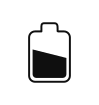

Bolbro Wetter
Willkommen bei der Bolbro Wetterstation. Alle gezeigten Werte werden mit unserer Wetterstation gemessen und hier dargestellt. Die Station sieht klassisch aus, ist aber unheimlich Smart. Mehr Informationen zur Station findest Du weiter unten.
Aktuelle Werte
| Temperatur | - | |
 |
Luftfeuchtigkeit | - |
 |
Luftdruck | - |
 |
Regen | - |
 |
Wind | - |
|  | Batterie | - |
 |
Sonne | - |
| Meldung | - |
Über die Station
Die Wetterstation ist ein kompletter Eigenbau. Die klassische Wetterhütte wurde nach einem Bauplan des deutschen Wetterdiensts (DWD) gebaut. Nachdem Messinstrumente heute kleiner (und elektronisch) sind, ist eine solch grosse Hütte eigentlich nicht mehr nötig. Sieht aber schön aus und stellt in jedem Fall sicher, dass die Temperatur-Werte nicht durch Sonneneinstrahlung und andere Witterungseinflüsse verfälscht werden.
Neben der Messung von Temperatur, Luftfeuchtigkeit und der Barometer-Funktion, misst die Wetterstation auch Windrichtung und -Geschwindigkeit. Weiterhin wird der Niederschlag gemessen. Wind und Niederschlag werden mechanisch gemessen. Die Mechanik wurde komplett neu konstruiert und kann mit einem 3D Drucker gedruckt werden. Die Modelle stellen wird im Netz zum Download zur Verfügung.
Zuletzt gibt es eine Menge Elektronik und Software. Auch die ist komplett selbst entworfen um unsere Anforderungen zu erfüllen. Wichtig war uns insbesondere, dass die Daten online ins Bolbro-Haus gemeldet und in die Hausautomation und Energiemanagement integriert werden. Dazu befindet sich in der Wetterhütte ein Microcontroller, der regelmässig alle Messungen durchführt. Die Daten werden dann über eine "Long Range" Funktechnik ins Haus gemeldet. Hier befindet sich ein weiterer Microcontroller, der die Daten auf dieser Webseite aufbereitet und in die Heimautomatisierung speist. Schaltpläne und Software haben wir ebenfalls veröffentlicht.
Hier sind alle Links: